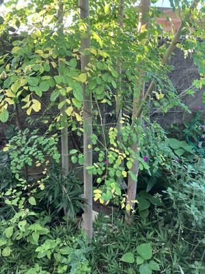
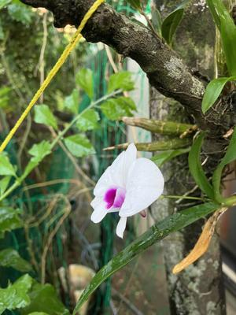

うるがいの話 ある日
最新: 整体の話【うるがいの話 ある日】とは 一日だけのプログです
『うるがいの話』の最新一日だけのプログで、通信料が少なく経済的だ。カニの画像をクリックすると全ての日付が載る『うるがいの話』サイトを表示します
|
|
【うるがいの話】 うるがい(ｳﾙｶﾞｲ urugai)とは、『もずくがに』の名前でとても大きくなります。 |
|---|---|
|
|
【カミマヤーの話】 猫のことを方言でマヤーといいます。カミマヤー（kamimayaa）とは、神の猫のことです。 |
|
【たながぁの音楽】 たながぁ（ﾀﾅｶﾞｰ tanagaa）とは手長えびのことで、何種類かあり大きいのは車 エビぐらいになります。 |

|
【ぶながぁの話】 ぶながぁ(ﾌﾞﾅｶﾞｰ bunagaa)とは、赤い髪の毛、赤い身体、そして身長は１ｍ２０ｃｍ ぐらい、川の蟹を食べているの目撃された。場所は沖縄県国頭郡大宜味村のと ある村僕の隣近所に住んでいる爺さんから、聞いた話です。 |
|
|
【ギーマの話】 ギーマ(giima)とは、山原の里山に咲くスズランに似た、 花を付けます。実は食べられます、 気が付くと口の周りが紫になっています。 |
2024年10月12日 (土）整体の話
17:31
昨日の午後から、痛みが治まってくる。昨日朝、痛くて出来なかった逆
海老ぞりも、軽い痛みがあるもの出来る。このまま、痛みは徐々に退い
ていくのだろう。もう３０年も前、偏頭痛で頭痛薬を常用していた。あ
る日、あんまりひどいのでヨメが利用していたシンコウ先生（故人）の
病院へ行った、首が曲がっているゼ、とボキ（本当に音が鳴った）を歪
みを直してもらった。お！、あれほどの偏頭痛が治った。それ以来、頭
痛薬は飲んでいない。
モリンガの切り株から、切り株を鉢などで抑えたが、伸びた４本の枝

２０代の頃、溝に落ちた車を持ち上げたときギックリ腰になり（車は溝
から脱出したが）、数日会社を休んだ。そのせいか、よくギックリ腰に
なった。シンコウ先生に診てもらうと、またしも骨がゆがんでいる、ポ
キ！（本当に鳴る）。その後、先生から木の枕で首の歪みを直す、首振
りや、膝を左右の降ったり、上下に足を降ったりうつ伏せになって膝を
曲げ左右に腰の骨が歪まないようにと予防法を教えてもらう。でもねな
かなか続かないのですよ。ギックリ腰で何度かシンコウ先生に診てもら
い、整体の後は要望のフリフリを病院で実践。
先生が故人になり、ギックリ腰になると弟子である仲原漢方クリニック
で整体をする。治る、針の治療もする。あるとき、ナカハラ先生が『骨
はまた、ゆがんでくるしね』と呟く。それを聴いた私、シンコウ先生の
歪みを是正するフリフリ体操を、真面目にするようになった。それでも
ギックリ腰は訪れた。クシャミをすると、とんでもなく痛いの！！！！
で痛みの度合いが分かる。
白い胡蝶蘭の花

退職してしばらくすると体調が、おかしくなる。首が凝るし、腰も痛い
し、で図書館から気功などの本を調べ実践する。フリフリと気功を加え
毎朝体の調子を整える。それでも、たまには、程度は軽いが腰の痛みは
訪れる。ただ、程度が軽いのである。２０２４年６月から、腰の骨の歪
み是正のためヨガの本をのみ、逆海老ぞり前屈による腱を伸ばすストレ
ッチを追加し、もう腰の痛みはオサバラだと思ったが。でもでも、一番
痛かったときクシャミをしたら、まだまだ大丈夫の痛みだった。継続す
るべ、いつかは本当に腰痛からオサバラになるかも。
１７時２４分 ビットコインの総資産 ￥２７、０９０（↑８５２）